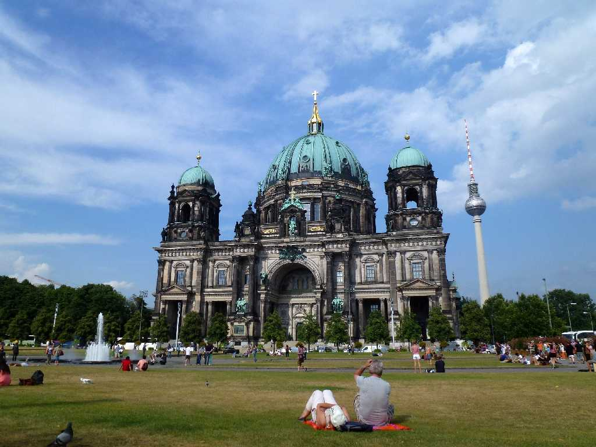
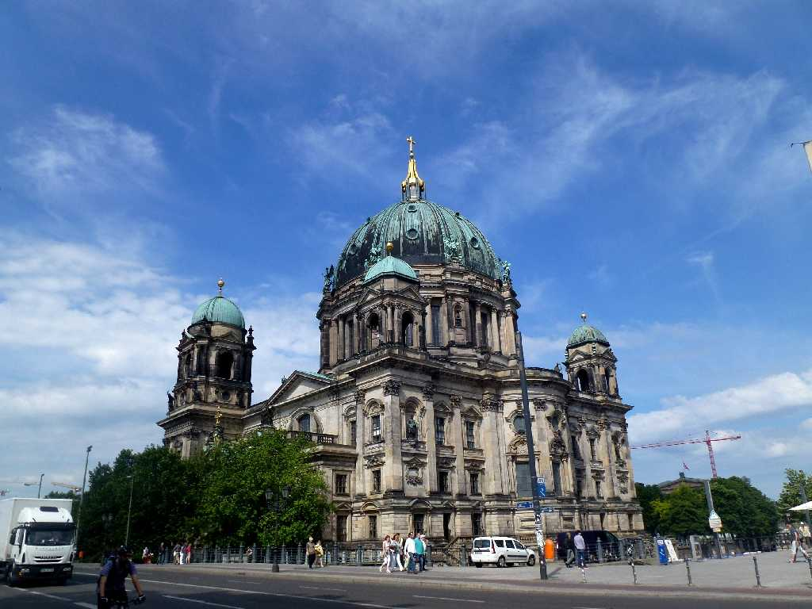
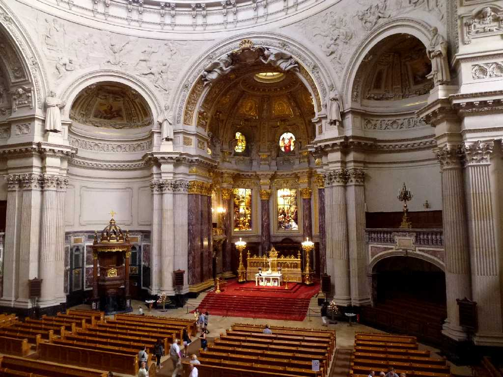

August 1989 Berliner Dom Berlin
ホーエンツォレルン王家の記念教会で王家ゆかりの墓碑がある

July 30 2013 Berliner Dom
８０日間世界一周鉄道の旅で３７日目 約３０年ぶりのベルリン訪問で危険で入場禁止となっていたベルリン大聖堂は１９９３年に改修されていた

Berliner Dom
ドイツ周遊５,０００ｋｍバスの旅で１年ぶりのベルリン訪問 今回はベルリン大聖堂内を散策

Berliner Dom

June 16 2014 Berliner Dom